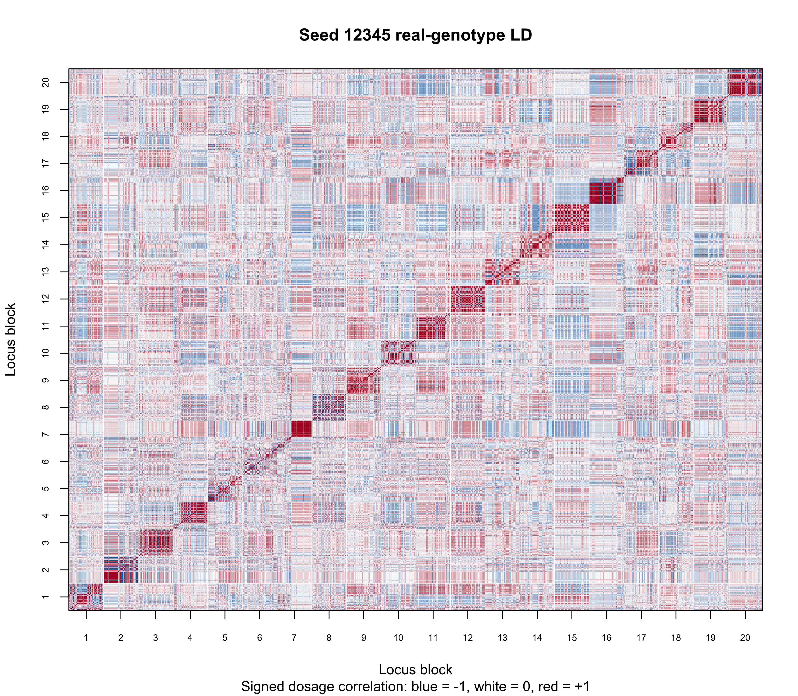
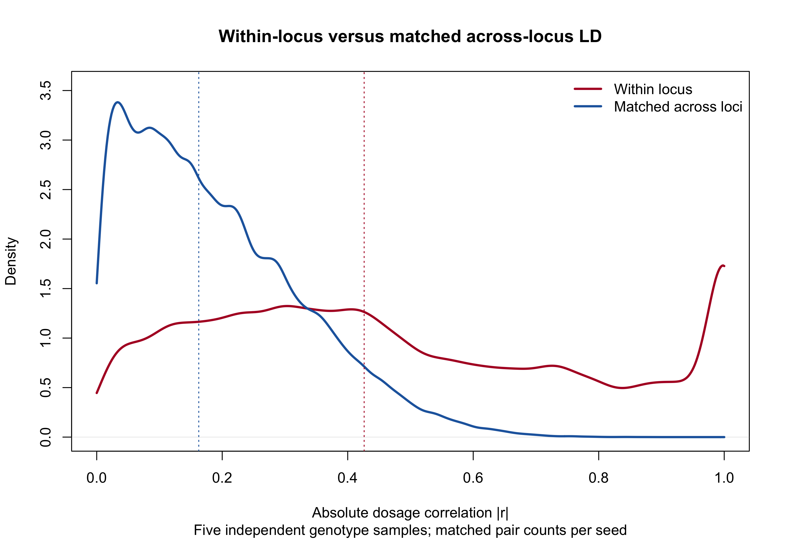
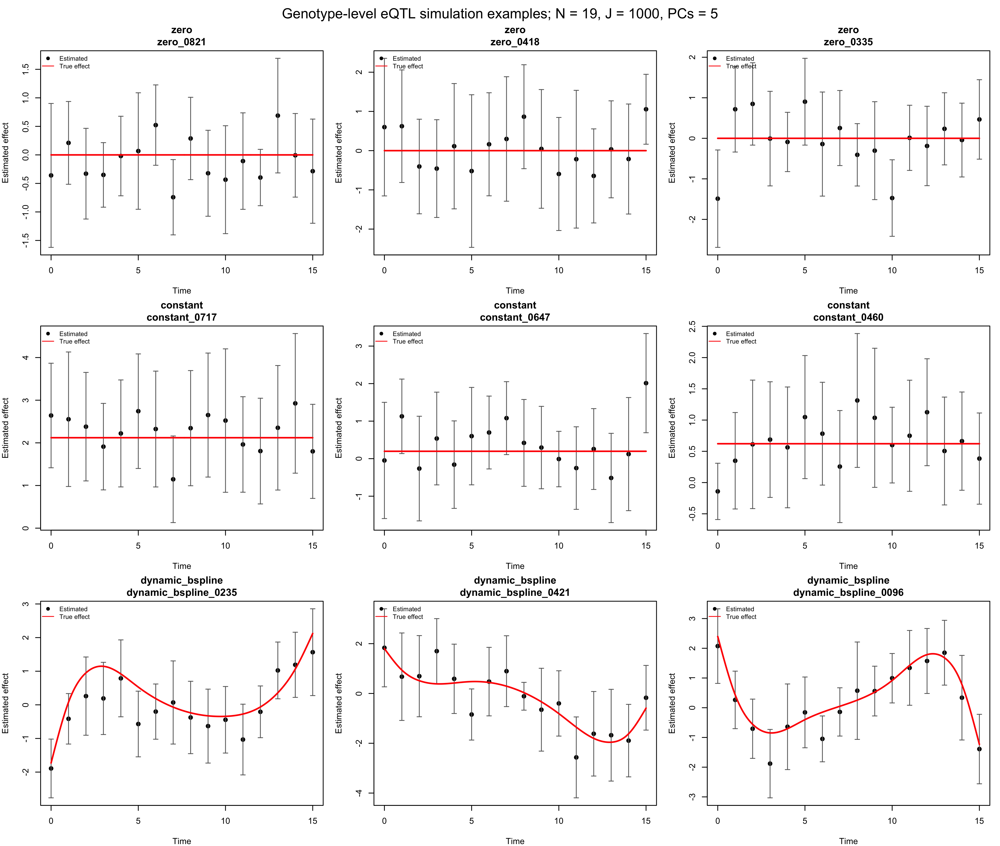
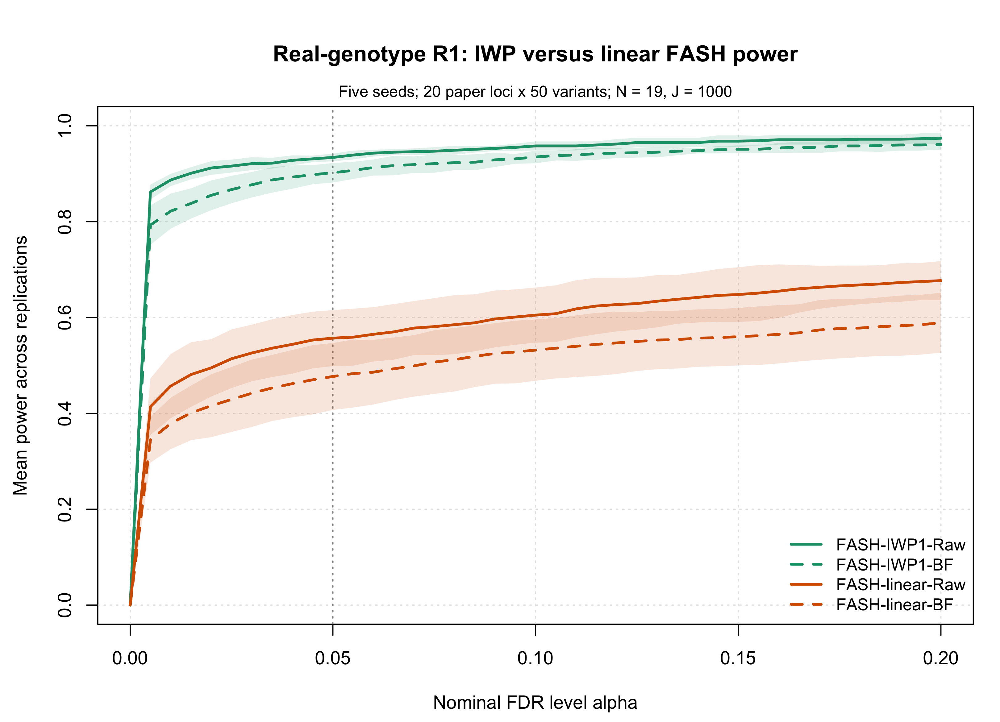
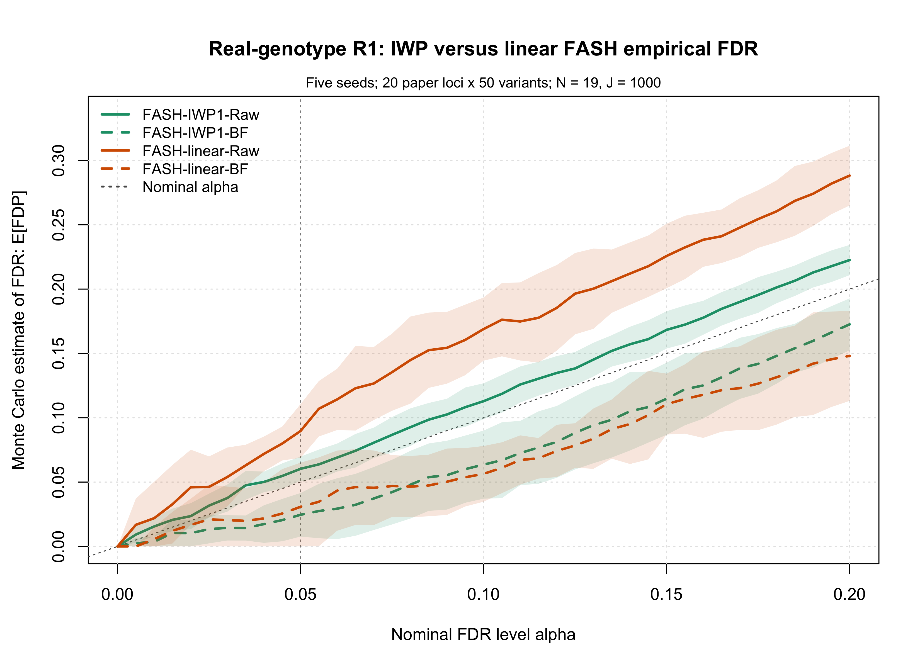
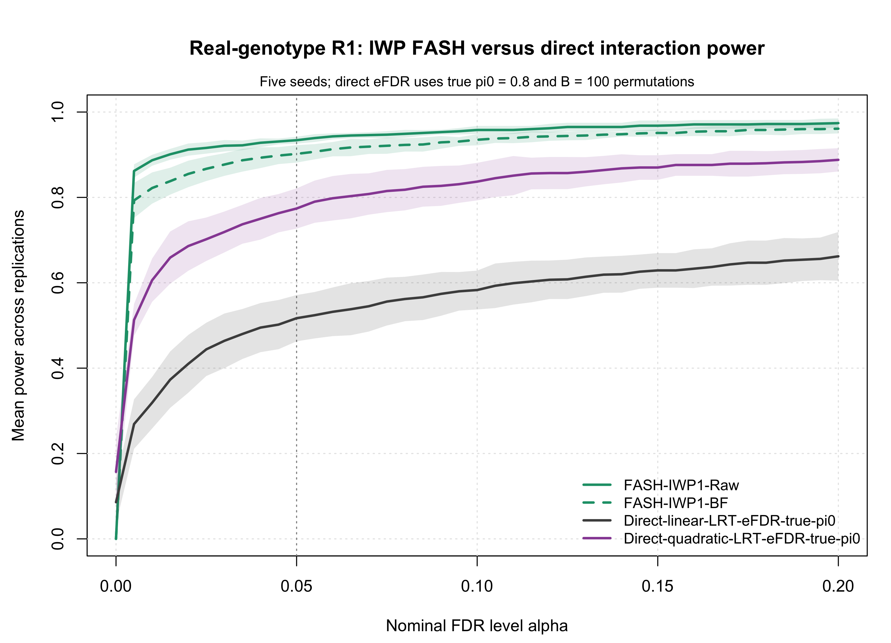
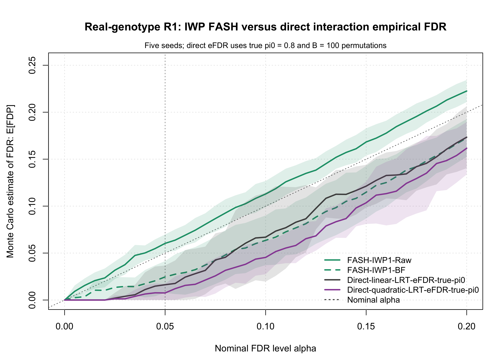

Last updated: 2026-08-06
Checks: 6 1
Knit directory: coderepo-local/
This reproducible R Markdown analysis was created with workflowr (version 1.7.2). The Checks tab describes the reproducibility checks that were applied when the results were created. The Past versions tab lists the development history.
The R Markdown is untracked by Git. To know which version of the R
Markdown file created these results, you’ll want to first commit it to
the Git repo. If you’re still working on the analysis, you can ignore
this warning. When you’re finished, you can run
wflow_publish to commit the R Markdown file and build the
HTML.
Great job! The global environment was empty. Objects defined in the global environment can affect the analysis in your R Markdown file in unknown ways. For reproduciblity it’s best to always run the code in an empty environment.
The command set.seed(20251109) was run prior to running
the code in the R Markdown file. Setting a seed ensures that any results
that rely on randomness, e.g. subsampling or permutations, are
reproducible.
Great job! Recording the operating system, R version, and package versions is critical for reproducibility.
Nice! There were no cached chunks for this analysis, so you can be confident that you successfully produced the results during this run.
Great job! Using relative paths to the files within your workflowr project makes it easier to run your code on other machines.
Great! You are using Git for version control. Tracking code development and connecting the code version to the results is critical for reproducibility.
The results in this page were generated with repository version 9fbd863. See the Past versions tab to see a history of the changes made to the R Markdown and HTML files.
Note that you need to be careful to ensure that all relevant files for
the analysis have been committed to Git prior to generating the results
(you can use wflow_publish or
wflow_git_commit). workflowr only checks the R Markdown
file, but you know if there are other scripts or data files that it
depends on. Below is the status of the Git repository when the results
were generated:
Ignored files:
Ignored: .DS_Store
Ignored: .Rhistory
Ignored: .Rproj.user/
Ignored: analysis/.DS_Store
Ignored: analysis/.Rhistory
Ignored: code/.DS_Store
Ignored: code/.Rhistory
Ignored: data/appendixB/
Ignored: data/dynamic_eQTL_real/
Ignored: data/toy_example/
Ignored: output/dynamic_eQTL_real/
Ignored: output/pdf/
Ignored: output/revision_simulations/
Untracked files:
Untracked: Rplots.pdf
Untracked: analysis/revision_combined_spiky_genotype_simulation.rmd
Untracked: analysis/revision_correlated_error_simulation.rmd
Untracked: analysis/revision_functional_testing_simulation.rmd
Untracked: analysis/revision_genotype_level_simulation.rmd
Untracked: analysis/revision_internal_real_genotype_simulation.rmd
Untracked: analysis/revision_internal_targeted_broad_calibration.rmd
Untracked: analysis/revision_internal_zero_intercept_correlation.rmd
Untracked: analysis/revision_ld_tagging_switch_example.rmd
Untracked: code/00_eQTLs_CL.R
Untracked: code/01_fash_CL.R
Untracked: code/01_fash_CL.sbatch
Untracked: code/09_penalty_sensitivity.R
Untracked: code/09_penalty_sensitivity.sbatch
Untracked: code/revision_simulations/
Untracked: fash_prior_comparison_order1_after.pdf
Untracked: fash_prior_comparison_order1_after.png
Untracked: fash_prior_comparison_order1_before.pdf
Untracked: fash_prior_comparison_order1_before.png
Untracked: fash_prior_comparison_order2_after.pdf
Untracked: fash_prior_comparison_order2_after.png
Untracked: fash_prior_comparison_order2_before.pdf
Untracked: fash_prior_comparison_order2_before.png
Unstaged changes:
Modified: .gitignore
Modified: analysis/dynamic_eQTL_real.rmd
Modified: analysis/index.Rmd
Modified: analysis/nonlinear_dynamic_eQTL_real.Rmd
Modified: code/README.md
Modified: output/toy_example/toy_example_11.pdf
Modified: output/toy_example/toy_example_12.pdf
Modified: output/toy_example/toy_example_21.pdf
Modified: output/toy_example/toy_example_22.pdf
Note that any generated files, e.g. HTML, png, CSS, etc., are not included in this status report because it is ok for generated content to have uncommitted changes.
There are no past versions. Publish this analysis with
wflow_publish() to start tracking its development.
The retained R1 experiment independently simulates each genotype column from a Binomial distribution. This internal variant asks what happens when those columns are instead sampled from the YRI genotype dosages used in the paper. For each Monte Carlo seed, it samples 20 paper gene loci and one position-contiguous block of 50 common variants per locus, giving the same \(J=1000\) genotype columns and \(N=19\) donors as R1. The purpose is to retain observed dosage distributions and local linkage disequilibrium (LD) while leaving the R1 expression truth and fitting pipeline fixed.
For donor \(i\), synthetic gene-variant unit \(j\), and time \(t\), the model remains
\[ Y_{ijt} = \alpha_{jt} + G_{ij}\beta_j(t) + X_i^T\gamma_{jt} + \epsilon_{ijt}, \qquad \epsilon_{ijt} \sim N(0,1), \]
but \(G_{ij}\) is now a real YRI dosage rather than a Binomial draw. As in R1, the current simulation sets \(\alpha_{jt}=0\), includes an intercept in every fitted regression, uses five standardized PC-like covariates, and generates the covariate effects and expression errors independently.
The genotype source is the 19-sample dosage field (DS)
in the paper VCF. The candidate universe is defined by the named
gene-variant pairs in the paper’s eqtl_summary.rds. The
report validates the cached file names, sizes, and MD5 checksums against
the simulation configuration; routine page builds do not open either raw
input.
render_scrollable_table(
input_provenance_table,
align = "llrll",
minimum_width = "980px"
)| Artifact | File | Size (MiB) | Modified (UTC) | MD5 |
|---|---|---|---|---|
| YRI genotype VCF | YRI_genotype.vcf.gz | 112.6 | 2026-08-03 23:27:59 UTC | 4f9eb383ce3512d867b42ab806d451a8 |
| Paper gene-variant summary | eqtl_summary.rds | 89.3 | 2026-02-02 22:11:23 UTC | 23e7f6a0093309059424207872dfa1e0 |
The VCF sample order is:
18489, 18499, 18505, 18508, 18511, 18517, 18520, 18858, 18870, 18907, 18912, 19093, 19108, 19159, 19190, 19209, 18855, 19127, 19193.
The single VCF pass requested and matched 94,496 candidate variants. All were finite, biallelic, polymorphic, and above the observed MAF threshold after matching.
render_scrollable_table(
extraction_table,
align = "lr",
minimum_width = "620px"
)| Metric | Value |
|---|---|
| Requested candidate variants | 94,496 |
| Matched VCF variants | 94,496 |
| Retained common polymorphic variants | 94,496 |
| Candidate genes represented | 576 |
For each seed, genes with at least 80 paper gene-variant pairs are randomly prioritized. The union of the first 120 candidate genes per seed is extracted in one VCF pass. Dosage MAF is calculated as
\[ \widehat{\mathrm{MAF}}_v= \min\!\left\{ \frac{1}{2N}\sum_{i=1}^{N}G_{iv}, 1-\frac{1}{2N}\sum_{i=1}^{N}G_{iv} \right\}, \]
and variants with observed MAF below 0.10 are excluded. The first 20 priority genes with at least 50 retained variants are selected. Within each gene, the variants are ordered by chromosome, position, and variant ID, and one random contiguous 50-variant window is sampled.
pair_ids <- names(readRDS(
"output/dynamic_eQTL_real/eqtl_summary.rds"
))
real_source <- prepare_real_genotype_source(
pair_ids = pair_ids,
vcf_path = "../genotype-data/YRI_genotype.vcf.gz",
seed_list = c(12345, 22345, 32345, 42345, 52345),
n_loci = 20,
variants_per_locus = 50,
candidate_genes_per_seed = 120,
minimum_raw_variants = 80,
maf_min = 0.10
)
real_sample <- sample_real_genotype_blocks(real_source, seed = 12345)
G <- real_sample$Grender_scrollable_table(
sampling_design_table,
align = "ll",
minimum_width = "760px"
)| Setting | Value |
|---|---|
| Donors | 19 |
| Time points | 16 (0 through 15) |
| Locus blocks per seed | 20 |
| Position-contiguous variants per block | 50 |
| Real genotype columns per seed | 1,000 |
| Observed MAF threshold | at least 0.10 |
| Monte Carlo seeds | 12345, 22345, 32345, 42345, 52345 |
| Unique loci across 100 seed-by-block selections | 98 (two loci were each selected in two independent seeds) |
The observed MAF across the 5,000 sampled columns ranges from 0.100 to 0.500. Across the 100 seed-by-block selections there are 98 unique genes. The two repeats below are independent-seed random coincidences and were retained rather than resampled.
render_scrollable_table(
repeated_loci_table,
align = "llr",
minimum_width = "680px"
)| Locus | Seeds | Selections across five seeds |
|---|---|---|
| ENSG00000100027 | 42345, 52345 | 2 |
| ENSG00000115170 | 22345, 32345 | 2 |
The seed-12345 heatmap shows the signed correlation among all 1,000 dosage columns. White block boundaries mark the 20 sampled loci. Strong diagonal blocks are the local LD structure this experiment was designed to preserve.
plot_real_genotype_ld_heatmap()
Within each seed, all within-locus variant pairs are summarized. As a negative control, the same number of variant pairs is sampled deterministically across different loci. This is a design diagnostic, not a population-level estimate of LD decay.
render_scrollable_table(
ld_seed_table,
align = "rrrrrrr",
minimum_width = "1180px"
)| Seed | Median locus span (kb) | Within-locus median |r| | Pairs with |r| >= 0.8 | Mean adjacent |r| | Matched across-locus median |r| | Within-minus-across |
|---|---|---|---|---|---|---|
| 12345 | 34.3 | 0.430 | 21.6% | 0.597 | 0.166 | 0.264 |
| 22345 | 30.2 | 0.410 | 16.2% | 0.555 | 0.161 | 0.249 |
| 32345 | 28.7 | 0.452 | 20.6% | 0.584 | 0.162 | 0.290 |
| 42345 | 34.1 | 0.414 | 19.3% | 0.571 | 0.160 | 0.254 |
| 52345 | 30.0 | 0.425 | 21.3% | 0.582 | 0.164 | 0.261 |
render_scrollable_table(
ld_summary_table,
align = "lr",
minimum_width = "760px"
)| Diagnostic | Value |
|---|---|
| Mean pooled within-locus median |r| | 0.426 |
| Mean matched across-locus median |r| | 0.163 |
| Mean within-minus-across median |r| | 0.264 |
| Mean fraction of within-locus pairs with |r| >= 0.8 | 19.8% |
| Mean seed-specific median locus span | 31.5 kb |
Across the five samples, the mean pooled within-locus median absolute correlation is 0.426, compared with 0.163 for matched across-locus pairs. The average within-minus-across gap is 0.264, and 19.8% of within-locus pairs have \(|r|\geq 0.8\).
plot_real_genotype_ld_distribution()
These checks establish that the sampled genotype matrices contain substantial local LD. They do not establish that the synthetic expression outcomes have all dependence structures present in the paper data; that distinction is addressed in the limitations below.
Only the genotype source changes. Each dataset still has 19 donors, 16 time points, 1,000 gene-variant units, and five covariates. The exact truth mixture is:
For a dynamic unit,
\[ \beta_j(t)=\mu_j+h_j(t), \qquad \mu_j\sim N(0,1), \qquad h_j(t)=\sum_{k=1}^{6}b_{jk}B_k(t), \qquad b_{jk}\stackrel{\mathrm{iid}}{\sim}N(0,1). \]
The time-varying deviation \(h_j(t)\) is centered over the 16 observed times and scaled to have maximum absolute value 2. The independent main effect \(\mu_j\) is then added, so the dynamic trajectory is not constrained to average zero. The true dynamic-null proportion remains \(\pi_0=0.8\).
out <- run_genotype_level_bspline_eqtl_simulation(
G = real_sample$G,
time_grid = 0:15,
n_covariates = 5,
class_probs = c(
dynamic_bspline = 0.20,
constant = 0.40,
zero = 0.40
),
expression_noise_sd = 1,
covariate_effect_sd = 0.5,
intercept_sd = 0,
dynamic_amplitude = 2,
bspline_df = 6,
bspline_coefficient_sd = 1,
constant_sd = 1,
dynamic_main_effect_sd = 1,
alpha = 0.05,
seed = 12345,
num_basis = 20,
num_cores = 4,
exact_class_counts = TRUE,
apply_t_se_correction = TRUE,
scenario = "r1_real_genotype_locus_blocks_random_bspline",
save_outputs = FALSE,
verbose = FALSE
)At every time point, the genetic effect and its standard error are
estimated from Y ~ G + PC1 + PC2 + PC3 + PC4 + PC5. The
t-statistic standard-error correction is identical to R1 and uses
\[ \mathrm{df}=19-7=12, \]
corresponding to the intercept, genotype, and five covariates. Every fitted design in the cache has rank 7.
eqtl_summary <- estimate_eqtl_summaries_from_genotypes(
G = real_sample$G,
expression = expression_sim$expression,
covariates = covariates,
apply_t_se_correction = TRUE
)
datasets <- make_fash_datasets_from_eqtl_summary(
beta_hat = eqtl_summary$beta_hat,
se = eqtl_summary$se,
true_beta = effect_sim$beta_matrix,
time_grid = 0:15,
unit_info = effect_sim$unit_info,
scenario = "r1_real_genotype_locus_blocks_random_bspline"
)
fash_iwp1_raw <- fashr::fash(
Y = "y",
smooth_var = "x",
S = "sd",
data_list = datasets,
order = 1,
grid = default_revision_grid(),
num_basis = 20,
penalty = 10,
num_cores = 4,
verbose = FALSE
)
fash_iwp1_bf <- fashr::BF_update(fash_iwp1_raw, plot = FALSE)
fash_linear_raw <- fit_simplified_fash(
datasets = datasets,
sigma_beta = 1,
estimate_sigma = FALSE,
scale_time = TRUE
)
fash_linear_bf <- BF_update_simplified_fash(fash_linear_raw)The reported curves and tables average five independent genotype
samples and expression simulations with seeds 12345,
22345, 32345, 42345, and
52345. The complete seed-12345 object is used only for
representative trajectories.
The panels show three zero-effect units, three constant eQTLs, and three random B-spline dynamic eQTLs. Points are per-time genetic effect estimates, bars show two corrected standard errors, and red lines are the true effects.
plot_genotype_eqtl_examples(
out,
classes = c("zero", "constant", "dynamic_bspline"),
n_per_class = 3,
seed = 1,
true_curve_n = 500
)
This comparison changes only the alternative prior.
FASH-IWP1 uses the first-order IWP alternative.
FASH-linear uses the simplified alternative \(\beta(t)=\beta t\) with fixed \(\sigma_\beta=1\). Both raw and BF-corrected
fits are included.
The table reports the fitted prior weight on each method’s constant component. The true dynamic-null proportion is \(\pi_0=0.8\).
render_scrollable_table(
pi0_table,
align = "lll",
minimum_width = "720px"
)| Method | Fit | Mean estimated pi0 (95% MC CI) |
|---|---|---|
| FASH-IWP1 | Raw | 0.769 [0.748, 0.790] |
| FASH-IWP1 | BF-corrected | 0.834 [0.832, 0.836] |
| FASH-linear | Raw | 0.691 [0.676, 0.706] |
| FASH-linear | BF-corrected | 0.903 [0.894, 0.911] |
render_scrollable_table(
fash_table,
align = "lrrr",
minimum_width = "1020px"
)| Method | Mean discoveries | Power (95% MC CI) | Empirical FDR: E[FDP] (95% MC CI) |
|---|---|---|---|
| FASH-IWP1-Raw | 198.8 | 0.934 [0.926, 0.942] | 0.060 [0.051, 0.070] |
| FASH-IWP1-BF | 185.0 | 0.902 [0.882, 0.922] | 0.025 [0.008, 0.042] |
| FASH-linear-Raw | 122.4 | 0.557 [0.499, 0.615] | 0.090 [0.069, 0.111] |
| FASH-linear-BF | 98.4 | 0.477 [0.407, 0.547] | 0.031 [0.000, 0.065] |
plot_mc_alpha_curves(
fash_alpha,
metric = "power",
title = "Real-genotype R1: IWP versus linear FASH power",
subtitle = "Five seeds; 20 paper loci x 50 variants; N = 19, J = 1000",
style_profile = "combined"
)
plot_mc_alpha_curves(
fash_alpha,
metric = "fdr",
title = "Real-genotype R1: IWP versus linear FASH empirical FDR",
subtitle = "Five seeds; 20 paper loci x 50 variants; N = 19, J = 1000",
legend_position = "topleft",
style_profile = "combined"
)
At \(\alpha=0.05\), IWP-Raw and IWP-BF have mean power 0.934 and 0.902, compared with 0.557 and 0.477 for the corresponding linear fits. The IWP empirical FDR estimates are 0.060 [0.051, 0.070] for Raw and 0.025 [0.008, 0.042] for BF. In these five samples, the nonlinear IWP alternative retains the same substantial power advantage over the linear alternative seen in R1, while BF is more conservative.
The direct baselines fit individual-level expression using linear or linear-plus-quadratic genotype-by-time interactions and use permutation-based eFDR. As in R1, the direct eFDR calculation is supplied with the true \(\pi_0=0.8\) and uses 100 donor-level permutations per replicate.
out <- add_direct_interaction_efdr_results_to_genotype_output(
out = out,
n_permutations = 100,
alpha = 0.05,
seed = seed + 10000L,
lambda = 0.5,
pi0_method = "conservative",
true_pi0 = 0.8,
include_true_pi0 = TRUE,
permute_covariates_with_expression = TRUE,
num_cores = 4,
overwrite = TRUE,
verbose = FALSE
)render_scrollable_table(
direct_table,
align = "lrrr",
minimum_width = "1060px"
)| Method | Mean discoveries | Power (95% MC CI) | Empirical FDR: E[FDP] (95% MC CI) |
|---|---|---|---|
| FASH-IWP1-Raw | 198.8 | 0.934 [0.926, 0.942] | 0.060 [0.051, 0.070] |
| FASH-IWP1-BF | 185.0 | 0.902 [0.882, 0.922] | 0.025 [0.008, 0.042] |
| Direct-linear-LRT-eFDR-true-pi0 | 105.2 | 0.517 [0.463, 0.571] | 0.016 [0.000, 0.037] |
| Direct-quadratic-LRT-eFDR-true-pi0 | 156.0 | 0.774 [0.727, 0.821] | 0.008 [0.000, 0.017] |
plot_mc_alpha_curves(
direct_alpha,
metric = "power",
title = "Real-genotype R1: IWP FASH versus direct interaction power",
subtitle = "Five seeds; direct eFDR uses true pi0 = 0.8 and B = 100 permutations",
style_profile = "combined"
)
plot_mc_alpha_curves(
direct_alpha,
metric = "fdr",
title = "Real-genotype R1: IWP FASH versus direct interaction empirical FDR",
subtitle = "Five seeds; direct eFDR uses true pi0 = 0.8 and B = 100 permutations",
legend_position = "bottomright",
style_profile = "combined"
)
At \(\alpha=0.05\), IWP-BF has mean power 0.902, compared with 0.517 for the direct linear test and 0.774 for the direct quadratic test. Their respective mean empirical FDR estimates are 0.025, 0.016, and 0.008.
This five-seed pilot supports a focused conclusion. Replacing independent Binomial genotype columns with common YRI dosages sampled in local blocks does not change the qualitative R1 method ordering: IWP FASH remains more powerful than linear FASH and the direct interaction baselines for the broad random B-spline truth used here. The BF-updated IWP fit has mean power 0.902 and mean empirical FDR 0.025 at \(\alpha=0.05\).
The LD diagnostic confirms that the external genotype matrices contain the intended local dependence: within-locus median \(|r|\) exceeds its matched across-locus reference in every seed. This supports the narrow claim that the regressions use real dosage and local-LD patterns. With only five Monte Carlo replicates, the intervals describe Monte Carlo variation in this pilot and do not justify a general claim for other populations, MAF filters, locus widths, or LD architectures.
This page implements the selected genotype-only design. Although each block contains 50 real variants from one paper gene locus, the simulation creates a separate synthetic expression outcome for every gene-variant unit. The 50 variants in a block therefore do not test the same realized expression vector for that gene. Expression errors and effect trajectories are generated independently across units, exactly as in R1.
Consequently, this experiment preserves the real genotype dosage distribution and local LD in \(G\), but it does not reproduce shared-expression dependence, tag-SNP competition, or correlated summary statistics created when many SNPs are tested against one observed gene-expression outcome. A separate shared-expression simulation would be required to study those features. The results here should be interpreted as a real-design-matrix sensitivity check, not as a full reconstruction of the paper’s multi-SNP-per-gene analysis.
Routine builds read the completed cache at
output/revision_simulations/internal/r1_real_genotype_locus_blocks_pilot5/and do not scan the VCF, reload the paper pair universe, or rerun the
simulation. The sampling helper, driver, and cache-validation code are
in
code/revision_simulations/internal/r1_real_genotype/.
The full five-seed cache can be regenerated with:
Rscript --vanilla \
code/revision_simulations/internal/r1_real_genotype/run_real_genotype_mc_replication.R \
--n-loci 20 \
--variants-per-locus 50 \
--maf-min 0.10 \
--candidate-genes-per-seed 120 \
--minimum-raw-variants 80 \
--n-covariates 5 \
--noise-sd 1 \
--dynamic-main-effect-sd 1 \
--efdr-permutations 100 \
--seed-list 12345,22345,32345,42345,52345 \
--output-id r1_real_genotype_locus_blocks_pilot5 \
--num-cores 4The deterministic sampling tests can be rerun with:
Rscript --vanilla \
code/revision_simulations/internal/r1_real_genotype/test_real_genotype_sampling.R
sessionInfo()R version 4.5.1 (2025-06-13)
Platform: aarch64-apple-darwin20
Running under: macOS Sequoia 15.6.1
Matrix products: default
BLAS: /System/Library/Frameworks/Accelerate.framework/Versions/A/Frameworks/vecLib.framework/Versions/A/libBLAS.dylib
LAPACK: /Library/Frameworks/R.framework/Versions/4.5-arm64/Resources/lib/libRlapack.dylib; LAPACK version 3.12.1
locale:
[1] C.UTF-8/C.UTF-8/C.UTF-8/C/C.UTF-8/C.UTF-8
time zone: America/Chicago
tzcode source: internal
attached base packages:
[1] stats graphics grDevices utils datasets methods base
other attached packages:
[1] workflowr_1.7.2
loaded via a namespace (and not attached):
[1] vctrs_0.7.3 httr_1.4.7 cli_3.6.6 knitr_1.50
[5] rlang_1.2.0 xfun_0.55 stringi_1.8.7 otel_0.2.0
[9] processx_3.8.6 promises_1.5.0 jsonlite_2.0.0 glue_1.8.1
[13] rprojroot_2.1.1 git2r_0.36.2 htmltools_0.5.9 httpuv_1.6.16
[17] ps_1.9.1 sass_0.4.10 rmarkdown_2.30 jquerylib_0.1.4
[21] tibble_3.3.0 evaluate_1.0.5 fastmap_1.2.0 yaml_2.3.12
[25] lifecycle_1.0.5 whisker_0.4.1 stringr_1.6.0 compiler_4.5.1
[29] fs_1.6.6 pkgconfig_2.0.3 Rcpp_1.1.1-1.1 rstudioapi_0.17.1
[33] later_1.4.4 digest_0.6.39 R6_2.6.1 pillar_1.11.1
[37] callr_3.7.6 magrittr_2.0.5 bslib_0.9.0 tools_4.5.1
[41] cachem_1.1.0 getPass_0.2-4